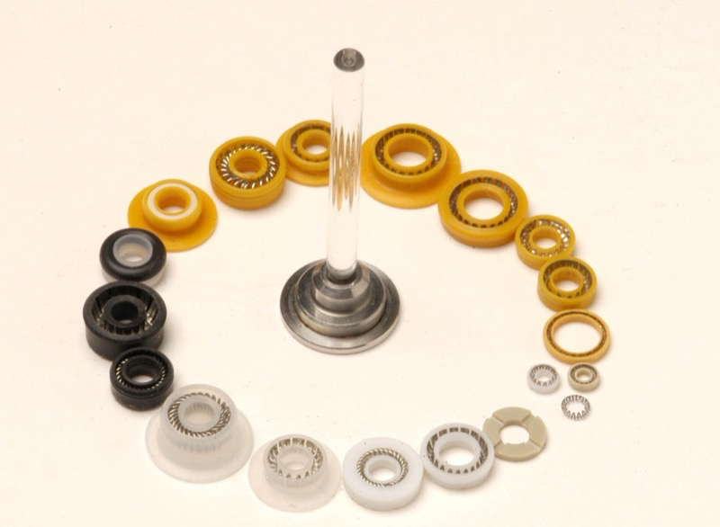
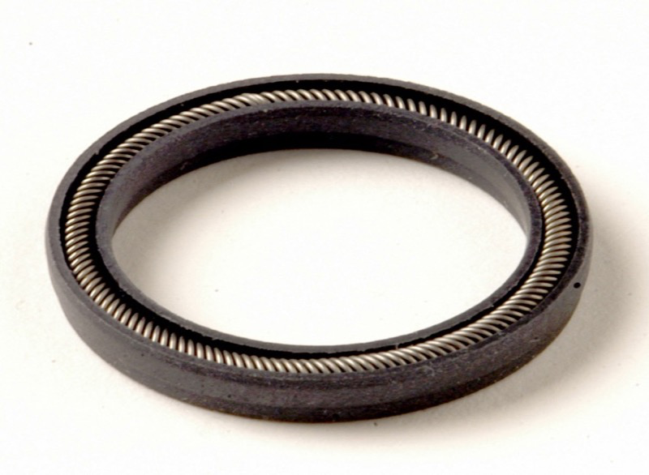
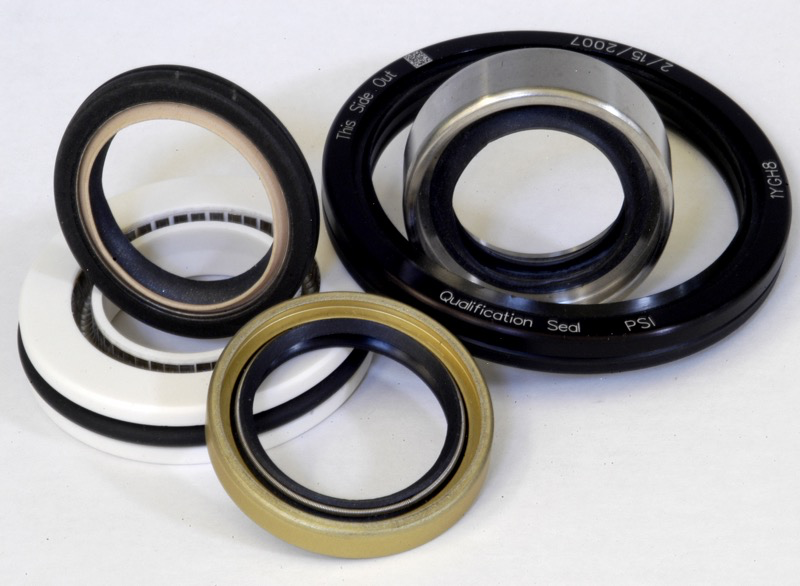

Sealing solutions
for many applications
From replacing standard O-rings to complex custom geometries,
we provide seals engineered for your specific operating environment.
Solutions we can supply for you
Through PSI, we offer a full range of sealing technologies for critical applications.

Spring Energized PTFE Seals
Performance Sealing designs and manufactures a full line of spring energized sealing solutions for your application.

Hydraulic Seals
Hydraulic seals that provide optimal performance with low friction and leakage and long seal life under extreme conditions.

PTFE Rotary Lip Seals
Performance Sealing designs and manufactures a full line of rotary lip sealing solutions for your application.
Where our solutions are used
A look at the types of applications across industries where PSI sealing solutions perform.
Spring Energized PTFE Seals
- HPLC plunger pumps
- Positive displacement pumps for blood analysis
- Cryogenic turbo pumps
- Other pumps, valves, and compressors
Hydraulic Seals
- Aircraft flight controls
- Cylinders
- Flap actuators
- Landing gear
PTFE Rotary Lip Seals
- Powered surgical hand pieces
- Gear pumps
- Gas compressors
- Vacuum feed-throughs
Endless possibilities
The right solution is a combination of seal material, spring energizer and design.
We help you select compounds matched to your operating conditions.
Spring Energizers
Canted coil springs, helical springs, and cantilever springs that provide consistent sealing force across a wide range of temperatures and pressures.
PTFE & Polymers
Virgin and filled PTFE, PEEK, UHMWPE, and other engineered plastics for extreme chemical and thermal resistance.
Specialty Materials
Metal seals, composite gaskets, and hybrid solutions for unique environmental and regulatory requirements.
Have a sealing challenge?
Tell us about your application requirements and we'll recommend the right solution.
Schedule an AppointmentPerformance Sealing, Inc (PSI)
PSI is an AS9100D-certified manufacturer of high-performance spring-energized polymer seals for critical applications. Using their proprietary Duron® materials and precision CNC machining, PSI delivers engineered sealing solutions for the most demanding environments in aerospace, medical, semiconductor, and energy industries.